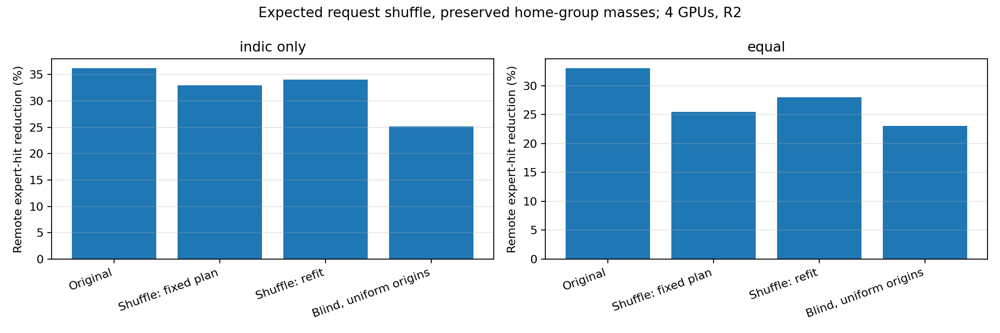
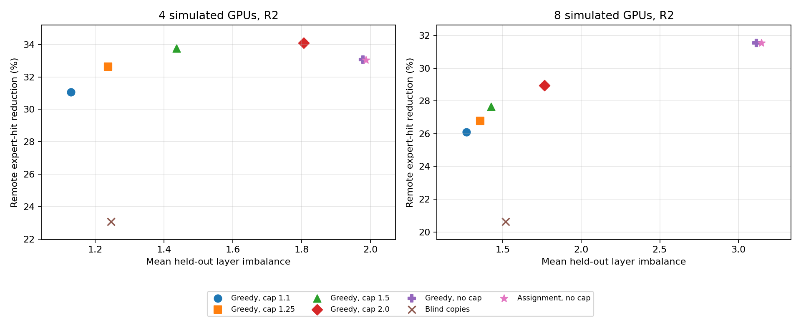
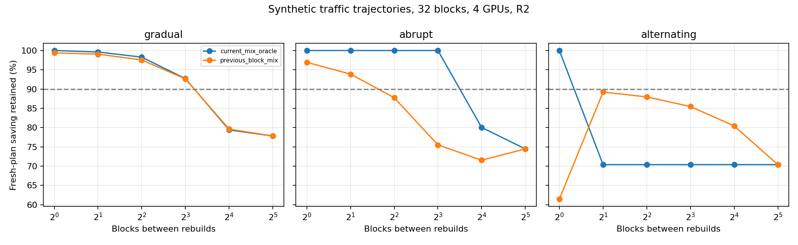

9 November 2026 · CPU count-based analysis
Important: Per-request routing data is missing. The shuffle result is an analytic random-homing expectation, not a literal request-by-request shuffle. Traffic here means remote expert-hit estimates, not measured network bytes or latency.
Full report and caveats · Tables, figures and scripts
| R2, four GPUs | Original saving | Expected shuffle + refit | Blind reference |
|---|---|---|---|
| indic only | 36.21% | 33.99% | 25.10% |
| equal | 33.05% | 28.00% | 23.07% |
Most of the Indic-only incremental advantage survives this expected-demand null. A smaller residual remains; the exact finite request shuffle is still needed.

All48layers completed with greedy placement. At R2 and cap1.1: 26.11% remote-hit reduction and 1.269 mean held-out imbalance. No global optimum claimed.

With one-block-old mixture information and R2, the synthetic gradual scenario retained≥90%fresh saving at up to8blocks; abrupt changes at up to2blocks; alternating changes passed at no tested interval. These are scenario results, not a time-based refresh recommendation.

Earlier results are unchanged; these follow-ups are stored separately. No family grouping was extended, and no new model or GPU run was made.